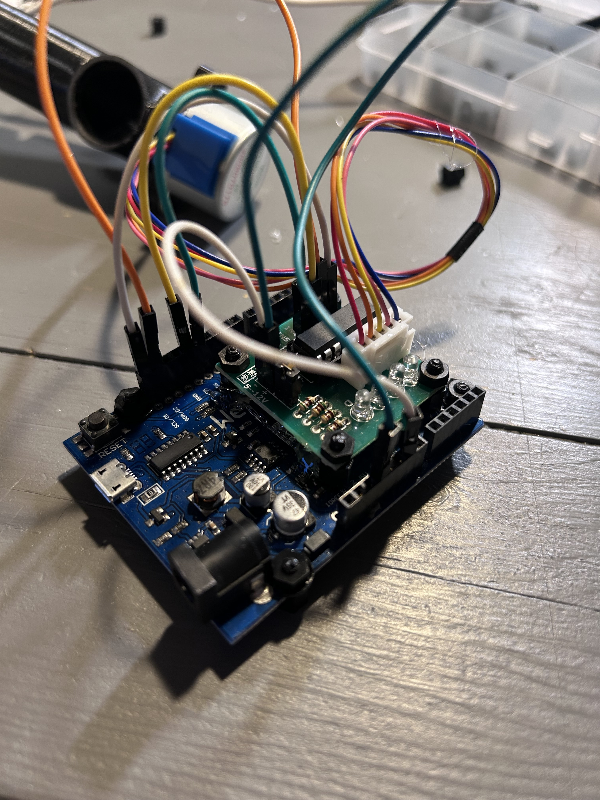
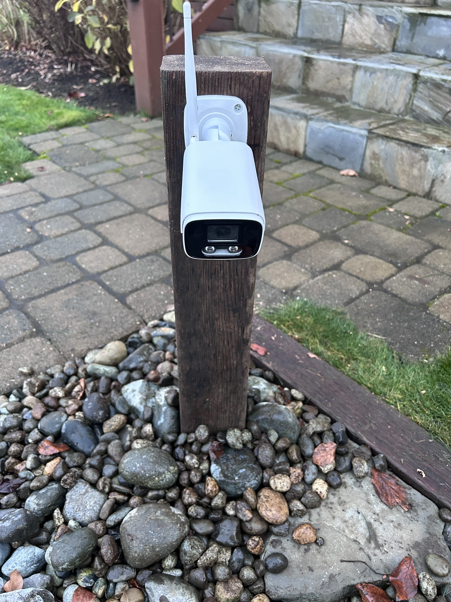

How It's Made
🛠️ Making the Fish Feeder
The Live Stream Smart Fish Feeder includes a security camera that livestreams to Twitch and an internet-connected fish feeder. If you are interested in creating this project, I have published a build guide here ↗️ .
Dry box with WeMos board, stepper motor, and 3D printed fish food dispenser.

Camera facing dry box mounted on the pond dock.

WeMos controller board connected to Blynk IoT platform for web control.

Livestreaming IP camera connected to Twitch.tv RTMP server.